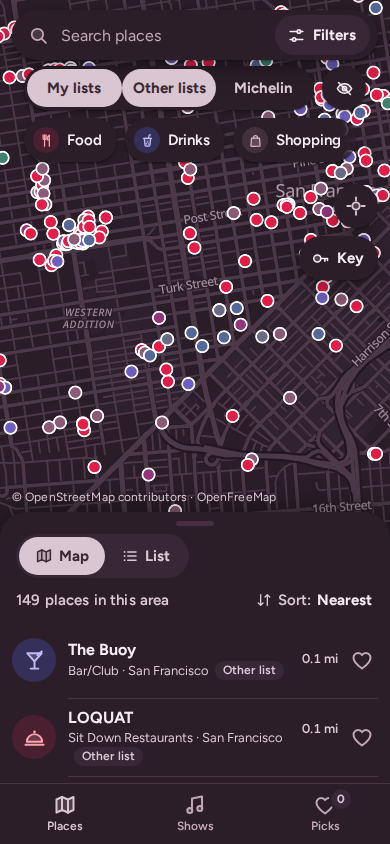
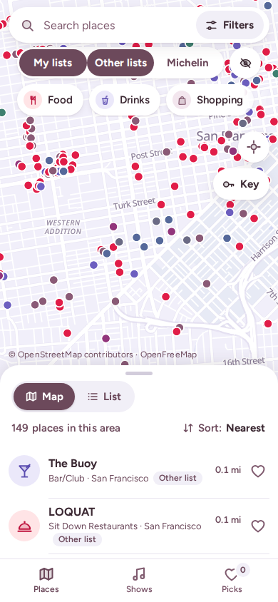
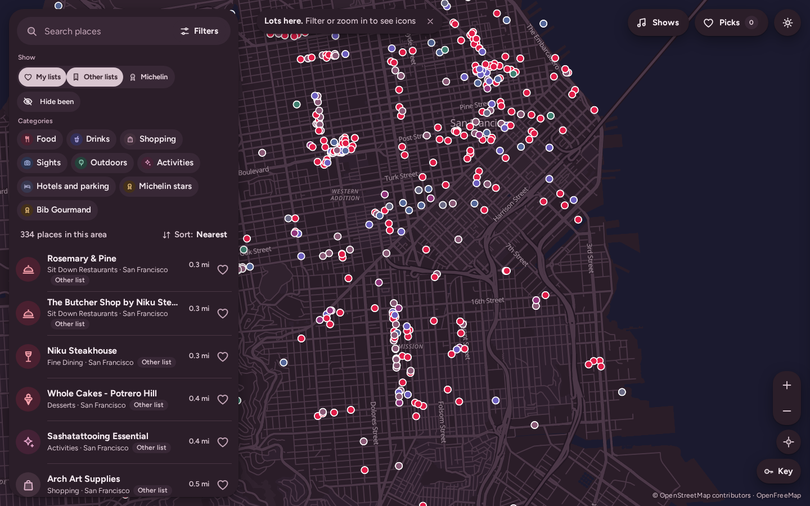
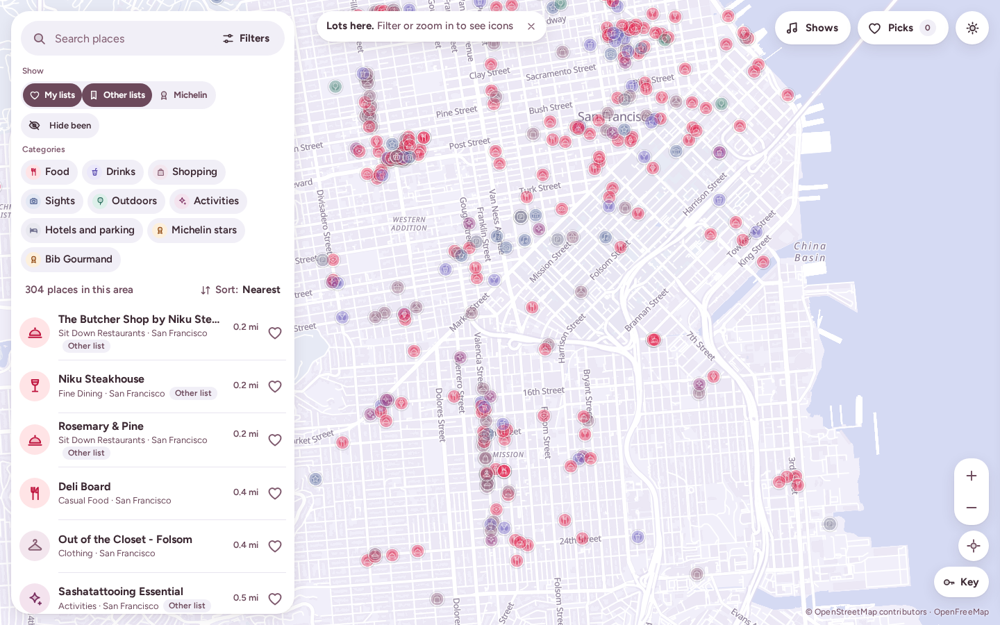
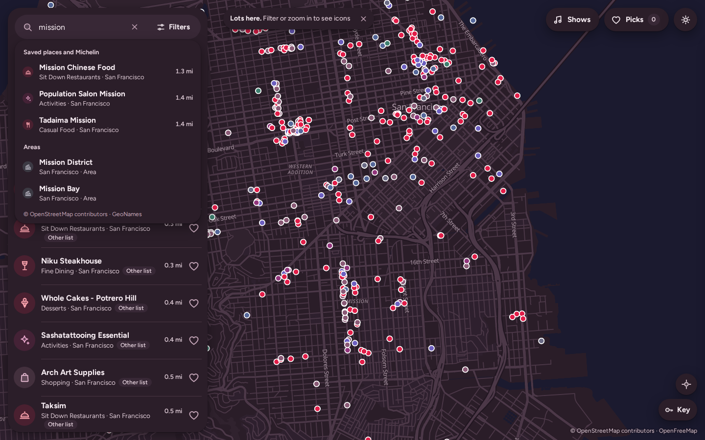
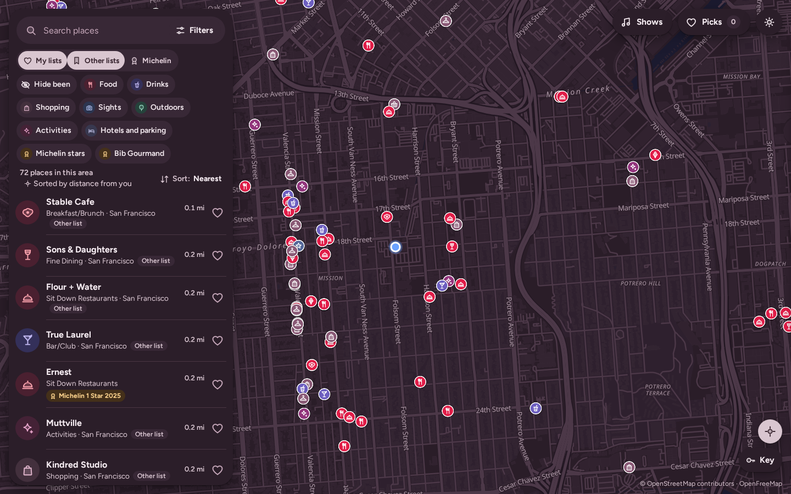
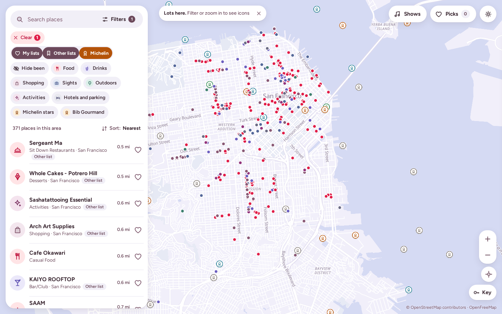
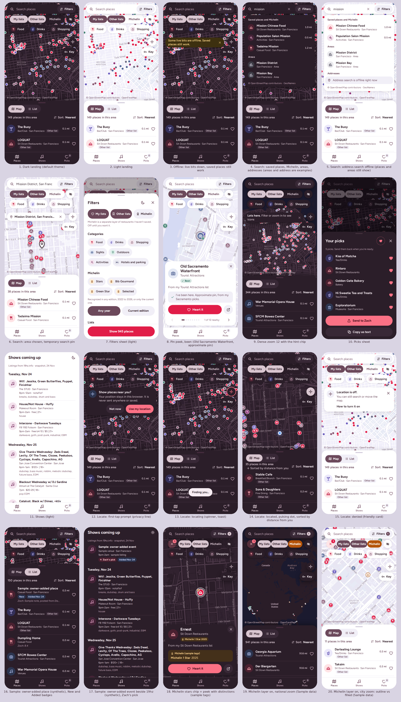

Little Travel Book, round 3
This is A (map first), refined as your own daily explorer. It is dark by default, every place is its own pin, and the category icons appear as you zoom in. It adds quick filters, search that jumps the map to places, areas and addresses, and Locate me (your position never leaves the browser). The Michelin layer is off until you turn it on, and the site keeps working when the home server is offline. Hearts and picks are still there for anyone you send it to.
The Michelin tags and points shown are samples until the real data lands. The "owner-added" items are samples of how your Discord posts will look.
Phone prototype
Desktop prototype
All states, live
Icons and key
Build spec (HANDOFF.md)
Home backend stack
Phone and desktop







Every state

Still yours to decide
- Sign off on this design so the build can start.
- Where should the map open: San Francisco, your last view, or Locate on first visit (that needs a tap)?
- Which categories get a quick chip on the phone, and which live only in Filters?
- Michelin colours: amber for stars and teal for Bib Gourmand stand apart from your palette on purpose. Keep them or bring them closer?
- Should new places you add from Discord float to the top of the feed for a while, or just carry a "New" badge?
- Basemap coverage: which regions get detailed tiles on your home server, and should there be a world overview map for Michelin abroad?
- Photon's index for the whole US needs tens of GB of disk. Index the whole US or only your states?
- Is the server-side fetch of 19hz.info for shows acceptable under "no third-party services"?
- Wordmark and app icon: plain text for now. Do you want an icon designed?